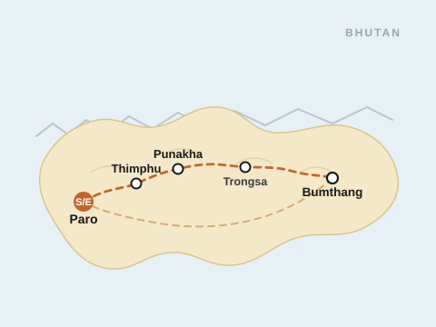

© gomoadventures.com
Bhutan Kingdom of Fungi
Trip Overview
“Where the forest still decides the menu.”
Every summer, monsoon rains coax one of Bhutan's most prized delicacies from the forest floor: the wild matsutake mushroom. This 11-day small-group journey follows the harvest from the pine forests of Bumthang to the farmhouse kitchens where it's cooked, pairing early-morning foraging walks with the classic Bhutanese circuit of dzongs, monasteries and mountain passes.
Guided throughout by a licensed local naturalist and joined by village foragers, you'll learn to spot matsutake, chanterelles and other wild fungi in their natural habitat, then watch — and help — as they're prepared into a farmhouse feast. Between forest days, there's ample time for photography at Paro's Tiger's Nest, Punakha Dzong and the high passes of central Bhutan, plus quiet village walks and a traditional hot stone bath to end the day.
Small groups of no more than 12 travelers keep the pace relaxed and the access personal — this is Bhutan at its most rooted in season, place and people.

Itinerary
Day 1 Arrive Paro — Welcome to the Dragon Kingdom
Your flight into Paro is a destination in itself, weaving between Himalayan peaks before touching down in the valley. Clear customs and immigration, then meet your GOMO guide for the transfer into town. Settle in before an evening welcome dinner, where you'll meet your fellow travelers and hear an introduction to the matsutake season ahead.
Accommodation: Hotel in Paro
Meals: Dinner
Day 2 Paro — Tiger’s Nest Hike & Photography
An early start for the hike to Taktsang Monastery, the “Tiger's Nest,” perched on a cliff 900m above the valley floor. Pause at the cafeteria viewpoint for the classic photograph before continuing up to the monastery itself. Afternoon at leisure in Paro town, with an optional visit to the National Museum.
Accommodation: Hotel in Paro
Meals: Breakfast, Lunch, Dinner
Day 3 Paro / Thimphu — Capital City & Craft Bazaar
Drive to Thimphu, Bhutan's capital, stopping en route at the confluence of the Paro and Thimphu rivers. In the city, visit the giant Buddha Dordenma statue, the weekend handicrafts market and a family-run textile workshop, gaining context for the traditions you'll see continue in the villages ahead.
Accommodation: Hotel in Thimphu
Meals: Breakfast, Lunch, Dinner
Day 4 Thimphu / Punakha — Dochula Pass & Punakha Dzong
Cross Dochula Pass, its 108 memorial chortens framed by the eastern Himalayas on a clear morning — a favorite photography stop. Descend into the warmer Punakha valley to visit Punakha Dzong, set dramatically at the meeting of two rivers, before an easy walk to Chimi Lhakhang, the “fertility temple.”
Accommodation: Farmhouse or hotel in Punakha
Meals: Breakfast, Lunch, Dinner
Day 5 Punakha — Farmhouse Visit & Foraging Introduction
Spend the day with a local farming family, learning how the rhythms of a Bhutanese household follow the seasons — from rice terraces to the first forest mushrooms of the year. A local forager joins to demonstrate identification basics before dinner is cooked together using the day's finds.
Accommodation: Farmhouse or hotel in Punakha
Meals: Breakfast, Lunch, Dinner
Day 6 Punakha / Trongsa — Over the Pele La
A scenic drive over Pele La (≈3,140m), the traditional divide between western and central Bhutan, through rhododendron and pine forest — prime mushroom habitat. Stop for photographs at yak herder camps along the way before arriving in Trongsa, home to Bhutan's largest dzong.
Accommodation: Hotel in Trongsa
Meals: Breakfast, Lunch, Dinner
Day 7 Trongsa / Bumthang — Into Matsutake Country
Continue east to the Bumthang valleys, spiritual heartland of Bhutan and center of the country's matsutake harvest. Visit Jakar Dzong and Jambay Lhakhang, one of Bhutan's oldest temples, before an evening briefing with local pickers ahead of tomorrow's forest day.
Accommodation: Hotel or farmhouse in Bumthang
Meals: Breakfast, Lunch, Dinner
Day 8 Bumthang — Ura Valley Foraging Day
The heart of the trip: a full day foraging the pine forests around the Ura valley alongside experienced village pickers. Learn where and how matsutake grow, gather alongside the harvest, and photograph the valley's traditional stone-walled village — among the oldest settlement styles in Bhutan. The day's harvest is grilled and shared at a farmhouse lunch.
Accommodation: Hotel or farmhouse in Bumthang
Meals: Breakfast, Lunch, Dinner
Day 9 Bumthang — Local Market & Monastery Photography
Visit the local matsutake trading market where the morning's harvest is graded and sold, then spend the afternoon at Kurjey Lhakhang and Tamshing Monastery with time to photograph resident monks, prayer wheels and painted murals. Close the day with a traditional hot stone bath, heated with river stones and infused with local herbs.
Accommodation: Hotel or farmhouse in Bumthang
Meals: Breakfast, Lunch, Dinner
Day 10 Bumthang / Paro — Farewell Dinner
Fly or drive back to Paro (route dependent on season and flight schedule), with the afternoon free to browse for last-minute textiles and handicrafts. Gather for a farewell dinner to reflect on the week's harvest, photographs and new friendships.
Accommodation: Hotel in Paro
Meals: Breakfast, Lunch, Dinner
Day 11 Departure
Transfer to Paro International Airport for your onward flight, taking with you a season's worth of forest trails, farmhouse meals and mountain photographs.
Meals: Breakfast
What’s Included
What’s Included
- 10 nights’ accommodation (hotels & farmhouse stays)
- All meals as listed in the itinerary
- Private licensed English-speaking guide throughout
- Private vehicle and driver for all transfers and touring
- Bhutan visa fee and Sustainable Development Fee (SDF)
- All entrance fees to dzongs, monasteries and museums
- Local forager guides on all foraging days
- Traditional hot stone bath experience
- Welcome and farewell dinners
What’s Not Included
- International airfare to and from Paro (PBH)
- Minimum medical and emergency evacuation insurance
- Trip cancellation or other travel insurance
- Alcoholic beverages and drinks not specified
- Tips and gratuities for guides and drivers
- Personal expenses and souvenirs
- Camera or drone permit fees where applicable
- Anything not specifically mentioned under “What’s Included”